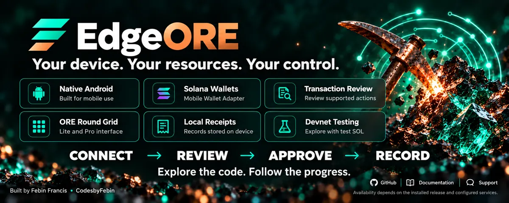
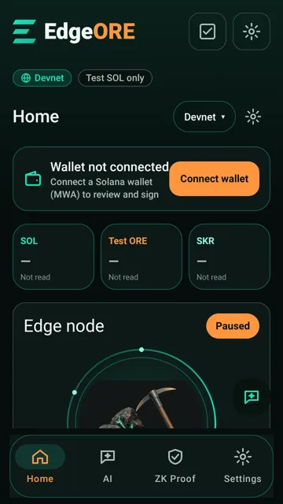
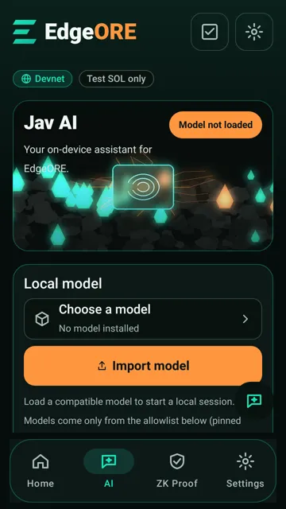
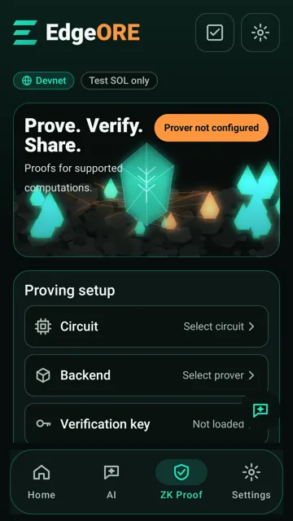
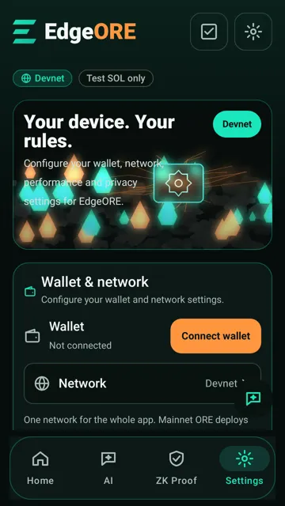
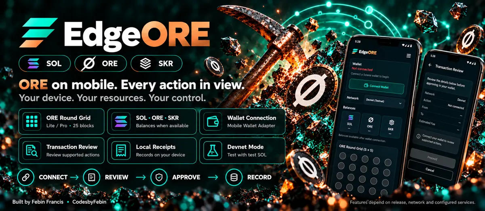
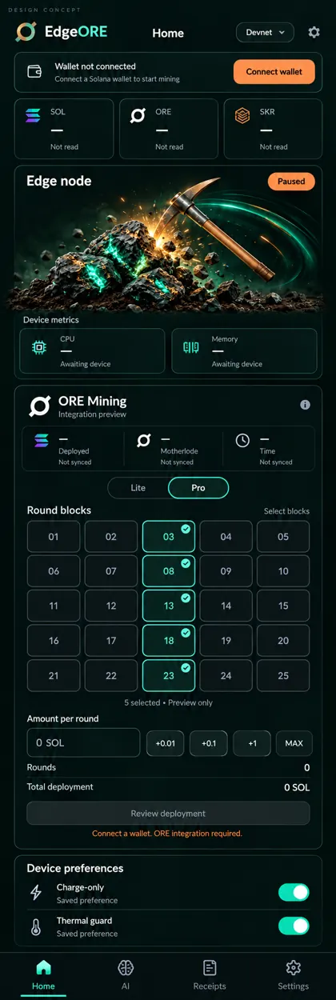

ORE v3Android · Solana MobileDevnet by default
ORE on mobile. Every action in view.
EdgeORE is a non-custodial Android client for the ORE v3 round grid. Pick blocks on the 5×5 board, review the exact message, and sign in your own wallet through Mobile Wallet Adapter. Mainnet deploys are opt-in and capped at 0.01 SOL each.
How it works
Connect → Review → Approve → Record
Connect
Authorize your MWA wallet for the network you picked. EdgeORE receives only your public address.
Review
EdgeORE builds the ORE transaction and shows the exact message that will be signed.
Approve
Your wallet signs. EdgeORE checks the returned bytes match what you reviewed, then submits once.
Record
A receipt signed in Android Keystore is saved on your phone. The receipt checker verifies the integrity of signed receipt contents.

Features
Built around the ORE board
SOL, ORE and SKR balances
Read from the network you selected. Anything not yet read says "Not read", never a guess.
Lite and Pro grid
The ORE v3 5×5 round grid in a simple Lite view or a detailed Pro view.
Exact-message review
See what you are signing before your wallet opens. No blind signing.
Local signed receipts
Hash-chained, Keystore-signed records on your device. The checker verifies the integrity of signed receipt contents.
Light and dark theme
Graphite, mint and copper, with a theme switch that follows your system by default.
The app
Screens
JVM (Robolectric) renders of the current build, not phone captures, in the fresh-install state with no wallet connected.






Safety
Guardrails, not promises
0.01 SOL cap
Each mainnet deploy is capped. The cap limits one deploy; it does not make deploying safe.
Risk tick
Mainnet needs an explicit risk confirmation every time.
Single submit
No automatic resend. An unknown outcome is checked against the chain, never resent.
No auto-spend
One wallet approval per transaction. Nothing spends in the background.
No rewards promised
ORE outcomes are decided by the ORE protocol. EdgeORE does not estimate or promise income.
Roadmap
Now, next, later
Now · shipped
0.1.0-clockin
- MWA wallet connect (Devnet, Testnet, Mainnet-beta)
- SOL, ORE and SKR balances
- ORE v3 grid, Lite and Pro
- Exact-message review, single submit
- Capped mainnet deploy with risk tick
- Keystore-signed receipts + receipt checker
- AI screen (connect your own host; no bundled model)
- Light/dark theme
Next
Read more of ORE
- Read-only ORE Reserve view
- Read-only motherlode view
- Read-only refining view
- Configurable RPC provider
Read-only means no new transactions.
Later · research
ORE v5 readiness
- Adapt to future ORE program versions when the ORE team publishes them
- ZK prover research
ORE v5 is not released. EdgeORE has no timeline for it; support depends on Regolith Labs publishing it, and there is no partnership. Research items are not commitments.
Links
Frequently asked questions
What is EdgeORE?
EdgeORE is a non-custodial Android dapp for Solana Mobile (package com.edgeore.app). It reads your SOL, ORE and SKR balances, shows the ORE v3 board, and builds transactions that you review on screen and sign in your own wallet through Mobile Wallet Adapter.
Does EdgeORE hold my keys or funds?
No. Your keys stay in your wallet app. EdgeORE only receives your public address and the transactions you approve, and cannot move funds without your signature.
Can I earn rewards or income with EdgeORE?
EdgeORE does not promise, guarantee or estimate any reward, return or income. ORE outcomes are decided by the ORE protocol, not by EdgeORE. Check-in streaks and points are stored on your phone only and have no monetary value.
Does a mainnet ORE deploy spend real SOL?
Yes. Mainnet deploy is opt-in: you select Mainnet, tick the risk confirmation, review the exact message and sign in your wallet. Each deploy is capped at 0.01 SOL, and the SOL may be lost. The cap limits a single deploy; it does not make deploying safe.
Can I try it without real funds?
Yes. Select Devnet in the network selector. Devnet uses test SOL only.
What is a signed receipt?
After each action EdgeORE saves a receipt signed with a key held in Android Keystore. The receipt checker verifies the integrity of signed receipt contents. The device signature shows that this install wrote the record; the wallet's Ed25519 signature is verified separately.
Is there an AI model inside the APK?
No model weights are bundled. You can connect an AI host you own, or download an allowlisted on-device model after consent. On-device generation has not yet been recorded on a phone.
Does EdgeORE generate zero-knowledge proofs?
Not in this build. The ZK Proof screen shows "Prover not configured" until a circuit, prover backend and verification key are set up.
Is EdgeORE production-ready?
No. It is a hackathon build (0.1.0-clockin) and features may change. It is provided as is.
Is EdgeORE affiliated with ORE or Solana Mobile?
No. EdgeORE is an independent open-source project. It uses the public ORE v3 program by Regolith Labs and Solana Mobile's Mobile Wallet Adapter, with upstream attribution in the NOTICE file.